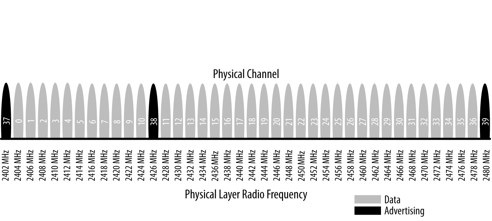

BLE Protocol Basics
1 Overview
As shown in the following figure, a complete single-mode BLE device is divided into three parts: controller, host, and application.
Each of these basic building blocks of the protocol stack is split into several layers that provide the functionality required to operate:
- Application
The application, like in all other types of systems, is the highest layer and the one responsible for containing the logic, user interface, and data handling of everything related to the actual use-case that the application implements. The architecture of an application is highly dependent on each particular implementation.
- Host
Includes the following layers:
- Generic Access Profile (GAP)
- Generic Attribute Profile (GATT)
- Logical Link Control and Adaptation Protocol (L2CAP)
- Attribute Protocol (ATT)
- Security Manager (SM)
- Host Controller Interface (HCI), Host side
- Controller
Includes the following layers:
- Host Controller Interface (HCI), Controller side
- Link Layer (LL)
- Physical Layer (PHY)
2 Physical Layer
The physical (PHY) layer is the part that actually contains the analog communications circuitry, capable of modulating and demodulating analog signals and transforming them into digital symbols.
The radio uses the 2.4 GHz ISM (Industrial, Scientific, and Medical) band to communicate and divides this band into 40 channels from 2.4000 GHz to 2.4835 GHz. As shown in the following Figure, 37 of these channels are used for connection data and the last three channels (37, 38, and 39) are used as advertising channels to set up connections and send broadcast data.

The standard uses a technique called frequency hopping spread spectrum, in which the radio hops between channels on each connection event using the following formula:
channel = (curr_channel + hop) mod 37
The value of the hop is communicated when the connection is established and is therefore different for every new established connection. This technique minimizes the effect of any radio interference potentially present in the 2.4 GHz band across any single channel, especially since WiFi and classic Bluetooth are prevalent in this band and devices might experience heavy interference near devices with a strong transmission power.
The modulation chosen to encode the bitstream over the air is Gaussian Frequency Shift Keying (GFSK), the same modulation used by classic Bluetooth and several other proprietary low-power wireless protocols. The modulation rate for Bluetooth Low Energy is fixed at 1 Mbit/s, which is therefore the upper physical throughput limit for the technology.
NOTES: In practice, however, as with any other protocol stack, this upper limit is never actually reached when it comes to application throughput, due mainly to protocol overheads in each of the different layers.
3 Link Layer
The Link Layer is the part that directly interfaces with the PHY, and it is usually implemented as a combination of custom hardware and software. It is also the only hard realtime constrained layer of the whole protocol stack, since it is responsible for complying with all of the timing requirements defined by the specification. It is therefore usually kept isolated from the higher layers of the protocol stack by means of a standard interface that hides the complexity and real-time requirements from the rest of the layers.
Computationally expensive, easily automated functionality is typically implemented in hardware by silicon vendors to avoid overloading the central processing unit that runs all of the software layers in the stack. This functionality usually includes:
- Preamble, Access Address, and air protocol framing
- CRC generation and verification
- Data whitening
- Random number generation
- AES encryption
The software half of the Link Layer manages the link state of the radio, which is how the device connects to other devices. A BLE device can be a master, a slave, or both, depending on the use case and requirements. Devices that initiate connections will be masters and devices that advertise their availability and accept connections will be slaves.
A master can connect to multiple slaves and a slave can be connected to multiple masters. Typically, devices such as smartphones or tablets tend to act as a master, while smaller, simpler, and memory-constrained devices such as standalone sensors usually adopt the slave role.
Bluetooth Low Energy has an inherent asymmetry in its lower layers between master and slave devices, because it requires more resources to act as a master. This asymmetry is similar to USB, in which USB hosts require more resources than USB devices. This type of architectural asymmetry allows low-cost peripherals running on cheap microcontrollers and radios, while the majority of the low-level protocol complexity occurs on devices with more resources, such as smartphones and tablets.
The Link Layer defines the following roles:
- Advertiser
A device sending advertising packets.
- Scanner
A device scanning for advertising packets.
- Master
A device that initiates a connection and manages it later.
- Slave
A device that accepts a connection request and follows the master’s timing.
These roles can be logically grouped into two pairs: advertiser and scanner (when not in an active connection) and master and slave (when in a connection).
3.1 Bluetooth Device Address
The fundamental identifier of a Bluetooth device, similar to an Ethernet Media Access Control (MAC) adddress, is the Bluetooth device address. This 48-bit (6-byte) number uniquely identifies a device among peers. There are two types of device addresses, and one or both can be set on a particular device:
- Public device address
This is the equivalent to a fixed, BR/EDR, factory-programmed device address. It must be registered with the IEEE Registration Authority and will never change during the lifetime of the device.
- Random device address
This address can either be preprogrammed on the device or dynamically generated at runtime. It has many practical uses in BLE.
Each procedure must be performed using one of the two, to be specified by the host.
3.2 Advertising and Scanning
BLE has only one packet format and two types of packets (advertising and data packets), which simplifies the protocol stack implementation immensely. Advertising packets serve two purposes:
- To broadcast data for applications that do not need the overhead of a full connection establishment
- To discover slaves and to connect to them
Each advertising packet can carry up to 31 bytes of advertising data payload, along with the basic header information (including Bluetooth device address). Such packets are simply broadcast blindly over the air by the advertiser without the previous knowledge of the presence of any scanning device. They are sent at a fixed rate defined by the advertising interval, which ranges from 20 ms to 10.24 s. The shorter the interval, the higher the frequency at which advertising packets are broadcast, leading to a higher probability of those packets being received by a scanner, but higher amounts of packets transmitted also translate to higher power consumption.
Because advertising uses a maximum of three frequency channels and the advertiser and the scanner are not synchronized in any way, an advertising packet will be received successfully by the scanner only when they randomly overlap as shown in the following Figure:
The scan interval and scan window parameters define how often and for how long a scanner device will listen for potential advertising packets. As with the advertising interval, those values have a deep impact on power consumption, since they directly relate to the amount of time the radio must be turned on.
The specification defines two basic types of scanning procedures:
- Passive scanning
The scanner simply listens for advertising packets, and the advertiser is never aware of the fact that one or more packets were actually received by a scanner.
- Active scanning
The scanner issues a Scan Request packet after receiving an advertising packet. The advertiser receives it and responds with a Scan Response packet. This additional packet doubles the effective payload that the advertiser is able to send to the scanner, but it is important to note that this does not provide a means for the scanner to send any user data at all to the advertiser.
The following Figire illustrates the difference between passive and active scanning.
Advertising packet types can be classified according to three different properties. The first is connectability:
- Connectable
A scanner can initate a connection upon reception of such an advertising packet.
- Non-connectable
A scanner cannot initiate a connection (this packet is intented for broadcast only).
The second property is scannability:
- Scannable
A scanner can issue a scan request upon reception of such an advertising packet.
- Non-scannable
A scanner cannot issue a scan request upon reception of such an advertising packet.
And the third is directability:
- Directed
A packet of this type contains only the advertiser’s and the target scanner’s Bluetooth Addresses in its payload. No user data is allowed. All directed advertising packets are therefore connectable.
- Undirected
A packet of this type is not targeted at any particular scanner, and it can contain user data in its payload.
The following shows shows the different advertising packet types and their properties.
The advertising packet types are used by the upper layers and, more specifically, GAP to differentiate between operating modes and to define procedures.
3.3 Connections
To establish a connection, a master first starts scanning to look for advertisers that are currently accepting connection requests. The advertising packets can be filtered by Bluetooth Address or based in the advertising data itself. When a suitable advertising slave is detected, the master sends a connection request packet to the slave and, provided the slave responds, establishes a connection. The connection request packet includes the frequency hop increment, which determines the hopping sequence that both the master and the slave will follow during the lifetime of the connection.
A connection is simply a sequence of data exchanges between the slave and the master at predefined times. As shown in the following Figure, each exchange is called a connection event.
The following three connection parameters are another set of key variables communicated by the master during the establishment of a connection:
- Connection interval
The time between the beginning of two consecutive connection events. This value ranges from 7.5 ms (high throughput) to 4 s (lowest possible throughput but also least power hungry).
- Slave latency
The number of connection events that a slave can choose to skip without risking a disconnection.
- Connection supervision timeout
The maximum time between two received valid data packets before a connection is considered lost.
Because many BLE devices might exist in a given area, or even just for security reasons (in which the master or the slave might be interested in only a small set of preknown devices), the Link Layer implements a white list feature, which specifies device addresses of interest to the advertiser or the scanner. Any advertising (if a scanner) or connection request (if an advertiser) packets received from devices whose Bluetooth Address is not present in the white list will simply be dropped.
White List
An important feature available in BLE controllers, white lists allow hosts to filter devices when advertising, scanning, and establishing connections on both sides. White lists are simply arrays of Bluetooth device addresses that are populated by the host and stored and used in the controller.
A device scanning or initiating a connection can use a white list to limit the number of devices that will be detected or with which it can connect, and the advertising device can use a white list to specify which peers it will accept an incoming connection from. The setting that defines whether a white list is to be used or not is called a filter policy. This essentially acts as a switch to turn white list filtering on and off.
Data packets are the workhorse of the protocol and are used to transport user data bidirectionally between the master and slave. These packets have a usable data payload of 27 bytes, but additional procotols further up the stack typically limit the actual amount of user data to 20 bytes per packet, although that logically depends on the protocol being used.
It is important to note that the Link Layer acts as a reliable data bearer. All packets received are checked against a 24-bit CRC and retransmissions are requested when the error checking detects a transmission failure. There is no upper limit for retransmissions; the Link Layer will resend the packet until it is finally acknowledged by the receiver.
Other than advertising, scanning, establishing (and tearing down) connections, and transmitting and receiving data, the Link Layer is also responsible for several control procedures, including these two critical processes:
- Changing the connection parameters
Each connection is established with a given set of connection parameters set by the master, but conditions and requirements might change during the lifetime of the connection. A slave might suddenly require a higher throughput for a short burst of data, or conversely, it might detect that in the near future a longer connection interval will suffice to keep the connection alive. The Link Layer allows the master and the slave to request new connection parameters and, in the case of the master, to set them unilaterally at any time. That way, each connection can be fine-tuned to provide the best balance between throughput and power consumption.
- Encryption
Security is critical in BLE, and the Link Layer provides the means to exchange data securely over an encrypted link. The keys are generated and managed by the host, but the Link Layer performs the actual data encryption and decryption transparently to the upper layers.
These two procedures are especially relevant, because they each require involvement from the host on both sides to be carried out. The Link Layer handles additional procedures to exchange version information and capabilities internally, so they are transparent to both the host and application developer.
4 Host Controller Interface (HCI)
The Bluetooth specification allows several possible configurations based on chip count, and the Host Controller Interface (HCI) is a standard protocol that allows for the communication between a host and a controller to take place across a serial interface.
The Bluetooth specification defines HCI as a set of commands and events for the host and the controller to interact with each other, along with a data packet format and a set of rules for flow control and other procedures. Additionally, the spec defines several transports, each of which augments the HCI protocol for a specific physical transport (UART, USB, SDIO, etc.).
Semiconductor technology has become inexpensive enough to allow single chips to incorporate the complete controller, host, and application in a single package (a systemon- chip, or SoC). In many embedded device applications, heavy integration is preferable, to reduce cost and size on the final device. In the case of BLE, it is common to implement the sensor using a single chip that runs all three layers concurrently on a low-power CPU.
5 Logical Link Control and Adaptation Protocol (L2CAP)
The rather cryptically named Logical Link Control and Adaptation Protocol (L2CAP) provides two main pieces of functionality. First, it serves as a protocol multiplexer that takes multiple protocols from the upper layers and encapsulates them into the standard BLE packet format (and vice versa).
It also performs fragmentation and recombination, a process by which it takes large packets from the upper layers and breaks them up into chunks that fit into the 27-byte maximum payload size of the BLE packets on the transmit side. On the reception path, it receives multiple packets that have been fragmented and recombines them into a single large packet that will then be sent upstream to the appropriate entity in the upper layers of the host. To draw a simple comparison, L2CAP is similar to TCP, in that it allows a wide range of protocols to seamlessly coexist through a single physical link, each with a different packet size and requirements.
For Bluetooth Low Energy, the L2CAP layer is in charge or routing two main protocols: the Attribute Protocol (ATT) and the Security Manager Protocol (SMP). The ATT forms the basis of data exchange in BLE applications, while the SMP provides a framework to generate and distribute security keys between peers.
In addition to those, and since version 4.1 of the specification, L2CAP can create its own user-defined channels for high-throughput data transfer that do not require the additional complexity added by ATT. Initially designed for file transfer, this feature is known as LE Credit Based Flow Control Mode and opens up the possibility of establishing low-latency, high-volume data channels over a BLE connection for applications that require it.
From an application developer’s point of view, it is important to note that, whenever only default packet sizes are used, the L2CAP packet header takes up four bytes, which means that the effective user payload length is 27 - 4 = 23 bytes (where 27 bytes is the Link Layer’s payload size).
6 Attribute Protocol (ATT)
The Attribute Protocol (ATT) is a simple client/server stateless protocol based on attributes presented by a device. In BLE, each device is a client, a server, or both, irrespective of whether it’s a master or slave. A client requests data from a server, and a server sends data to clients. The protocol is strict when it comes to its sequencing: if a request is still pending (no response for it has been yet received) no further requests can be sent until the response is received and processed. This applies to both directions independently in the case where two peers are acting both as a client and server.
Each server contains data organized in the form of attributes, each of which is assigned a 16-bit attribute handle, a universally unique identifier (UUID), a set of permissions, and finally, of course, a value. The attribute handle is simply an identifier used to access an attribute value. The UUID specifies the type and nature of the data contained in the value.
When a client wants to read or write attribute values from or to a server, it issues a read or write request to the server with the handle. The server will respond with the attribute value or an acknowledgement. In the case of a read operation, it is up to the client to parse the value and understand the data type based on the UUID of the attribute. On the other hand, during a write operation, the client is expected to provide data that is consistent with the attribute type and the server is free to reject the operation if that is not the case.
6.1 ATT operations
The set of operations possible over ATT fall within the following categories:
- Error Handling
Used by the server to respond to any of the requests when an error occurs, this includes only:
- Error Response
Sent as a response to a request in lieu of the corresponding operation response whenever an error prevented the request from being executed on the server.
- Error Response
- Server Configuration
Used to configure the ATT protocol itself, this includes only:
- Exchange MTU Request/Response
Exchange between client and server of their respective Maximum Transmission Units (MTU or maximum packet size accepted).
- Exchange MTU Request/Response
- Find Information
Used by the client to obtain information about the layout of the server’s attributes, they include:
- Find Information Request/Response
Obtain a list of all attributes in a particular handle range.
- Find by Type Value
Obtain the handle range between an attribute identifed by its UUID and its value and the next group delimiter.
- Find Information Request/Response
- Read Operations
Used by the client to obtain the value of one or more attributes, they include:
- Read by Type Request/Response
Obtain the value of one or more attributes using a UUID.
- Read Request/Response
Obtain the value of attributes using a handle.
- Read Blob Request/Response
Obtain part of a value of a long attribute using a handle.
- Read Multiple Request/Response
Obtain the value of one or more attributes using multiple handles.
- Read by Group Type Request/Response
Similar to Read by Type, but the UUID must be of a grouping type.
- Read by Type Request/Response
- Write Operations
Used by the client to set the value of one or more attributes, they include:
- Write Request/Response
Write to the value of an attribute and expect a response from the server.
- Write Command
Write to the value of an attribute without any response or acknowledgement. This operation does not follow the request/response sequencing and can be sent at any time.
- Signed Write Command
Similar to Write Command, but using a signature. This operation does not follow the request/response sequencing and can be sent at any time.
- Write Request/Response
- Queued Writes
Used by the client to write to attribute values that are longer than what can fit in a single packet, they include:
- Prepare Write Request/Response
Queue a write operation in the server for a particular handle, after which the successful queuing is acknowledged by the server.
- Execute Write Request/Response
Execute all pending queued write operations, the server then reports the success or failure to the client.
- Prepare Write Request/Response
- Server Initiated
Used by the server to asynchronously push attribute values to the client, they include:
- Handle Value Indication/Confirmation
Asynchronous server update of an attribute’s value and identified by its handle, expects an acknowledgement in the form of a confirmation from the client.
- Handle Value Notification
Asynchronous server update of an attribute’s value and identified by its handle, without acknowledgment. This operation does not follow the request/response sequencing and can be sent at any time.
- Handle Value Indication/Confirmation
All operations except the ones in the server initiated category (and a few select others) are grouped into request/response pairs. Requests are always sent by the client and responses are issued by the server as a reply to a request.
7 Security Manager (SM)
The Security Manager (SM) is both a protocol and a series of security algorithms designed to provide the Bluetooth protocol stack with the ability to generate and exchange security keys, which then allow the peers to communicate securely over an encrypted link, to trust the identity of the remote device, and finally, to hide the public Bluetooth Address if required to avoid malicious peers tracking a particular device.
The Security Manager defines two roles:
- Initiator
Always corresponds to the Link Layer master and therefore the GAP central.
- Responder
Always corresponds to the Link Layer slave and therefore the GAP peripheral.
Although it is always up to the initiator to trigger the beginning of a procedure, the responder can asynchronously request the start of any of the procedures listed in “Security Procedures”. There are no guarantees for the responder that the initiator will actually heed the request, serving more as a hint than a real, binding request. This security request can logically be issued only by the slave or peripheral end of the connection.
7.1 Security Procedures
The Security Manager provides support for the following three procedures:
- Pairing
The procedure by which a temporary common security encryption key is generated to be able to switch to a secure, encrypted link. This temporary key is not stored and is therefore not reusable in subsequent connections.
- Bonding
A sequence of pairing followed by the generation and exchange of permanent security keys, destined to be stored in nonvolatile memory and therefore creating a permanent bond between two devices, which will allow them to quickly set up a secure link in subsequent connections without having to perform a bonding procedure again.
- Encryption Re-establishment
After a bonding procedure is complete, keys might have been stored on both sides of the connection. If encryption keys have been stored, this procedure defines how to use those keys in subsequent connections to re-establish a secure, encrypted connection without having to go through the pairing (or bonding) procedure again.
Pairing can therefore create a secure link that will last only for the lifetime of the connection, whereas bonding actually creates a permanent association (also called bond) in the form of shared security keys that will be used in later connections until either side decides to delete them. Certain APIs and their documentation sometimes use the term pairing with bonding instead of simply bonding, because a bonding procedure always includes a pairing phase first.
The following Figure shows the two phases of a pairing procedure and the additional phase required for a bonding procedure.
Initially (Phase 1), all information required to generate the temporary key is exchanged between the two devices. Next, (Phase 2) the actual temporary encryption key (Short Term Key or STK) is generated on both sides independently and then used to encrypt the connection. Once the connection is secured by encryption, and only if performing bonding, the permanent keys can be distributed for storage and reuse at a later time.
7.2 Pairing Algorithms
A pairing procedure involves an exchange of Security Manager Protocol (SMP) packets to generate a temporary encryption key called Short Term Key (STK) on both sides. The last step of a pairing procedure (regardless of whether it will then continue into a security key exchange and therefore a bonding procedure) is to encrypt the link with the previously generated STK. During the packet exchange, the two peers negotiate one of the following STK generation methods:
- Just Works
The STK is generated on both sides, based on the packets exchanged in plain text. This provides no security against man-in-the-middle (MITM) attacks.
- Passkey Display
One of the peers displays a randomly generated, six-digit passkey and the other side is asked to enter it (or in certain cases both sides enter the key, if no display is available). This provides protection against MITM attacks and is used whenever possible.
- Out Of Band (OOB)
When using this method, additional data is transferred by means other than the BLE radio, such as another wireless technology like NFC. This method also provides protection against MITM attacks.
The SM specifies the following three types of security mechanisms that can be used to enforce various levels of security while in a connection or during the advertising procedure:
- Encryption
This mechanism consists of the full encryption of all packets transmitted over an established connection.
- Privacy
The privacy feature allows an advertiser to hide its public Bluetooth address by using temporary, randomly generated addresses that can be recognized by a scanner that is bonded with the advertising device.
- Signing
With this mechanism, a device can send an unencrypted packet over an established connection that is digitally signed (i.e., the source of which can be verfied).
Each of these three mechanisms can be used independently from the others, and the application, in conjunction with the host, has the choice of enforcing any of them concurrently.
7.3 Security Keys
Each of the three types of security mechanisms requires a key or a group of keys to be established. These are the keys that are exchanged and stored to allow for the security mechanisms to be enforced:
- Encryption Information (Long Term Key or LTK) and Master
Identification (EDIV, Rand)
This is a 128-bit encryption key shared by both sides (LTK) along with two values (EDIV, Rand) acting as its identifier, since a device may be bonded with multiple other peers.
- Identity Information (Identity Resolving Key or IRK) and Identity
Address Information (Address Type and Bluetooth Device Address)
The IRK is used to implement privacy: it can generate and resolve resolvable addresses that protect an advertising device from being tracked by malicious peers. The actual public or static random address of the device distributing it is included along with the IRK.
- Signing Information (Connection Signature Resolving Key or CSRK)
A key used to digitally sign unencrypted data.
Each of these keys or key sets is asymmetrical and unidirectional: it can be used only in the same role configuration in which they were originally generated. If the devices wish to switch Link Layer roles (master and slave) in subsequent connections, then each side must distribute its own set of keys for each key type. Devices negotiate the number of keys distributed in each direction, which can range from zero to all three key types in each direction, for a total of six keys distributed between peers (three from slave to master and three from master to slave).
NOTES: If no keys at all are exchanged during a bonding procedure, the bond between the two devices will still be valid, but no security procedures whatsoever will be available between them.
Since each key is asymmetrical (and therefore the process of key distribution is symmetrical) and thus each bond information stored between two devices can contain up to two instances of each key (each peer having distributed its own), it’s important to note how keys distributed by each device are used in subsequent connections.
As an example of a bonding with key distribution, let’s assume that two devices, a tablet
acting as a master and a watch acting as a slave, perform a bonding procedure and
exchange encryption keys in both directions. The watch will distribute its own encryption
keys in the form of encryption information and master identification (let’s call them
LTK_EDIV_Rand_watch) and the tablet will do the same thing in the opposite direction
(LTK_EDIV_Rand_tablet).
After the bonding is complete, the link can be disconnected, and then the two devices
might want to reconnect and reuse those keys to reestablish a secure, encrypted connection
without having to go through the bonding procedure again. If the devices reconnect
in the same configuration as before, with the tablet acting as a master, then both
will use LTK_EDIV_Rand_watch to encrypt the link. If, later, the two reconnect with
switched roles (i.e., the watch is this time acting as the master and the table a slave),
LTK_EDIV_Rand_tablet can then be used to encrypt the link.
8 Generic Attribute Profile (GATT)
The Generic Attribute Profile (GATT) builds on the Attribute Protocol (ATT) and adds a hierarchy and data abstraction model on top of it. In a way, it can be considered the backbone of BLE data transfer because it defines how data is organized and exchanged between applications.
It defines generic data objects that can be used and reused by a variety of application profiles (known as GATT-based profiles). It maintains the same client/server architecture present in ATT, but the data is now encapsulated in services, which consist of one or more characteristics. Each characteristic can be thought of as the union of a piece of user data along with metadata (descriptive information about that value such as properties, user-visible name, units, and more).
Along with GAP, GATT is an upperlayer entity that acts as the main interface to a Bluetooth Low Energy protocol stack.
9 Generic Access Profile (GAP)
The Generic Access Profile (GAP) dictates how devices interact with each other at a lower level, outside of the actual protocol stack. GAP can be considered to define the BLE topmost control layer, given that it specifies how devices perform control procedures such as device discovery, connection, security establishment, and others to ensure interoperability and to allow data exchange to take place between devices from different vendors.
GAP establishes different sets of rules and concepts to regulate and standardize the lowlevel operation of devices:
- Roles and interaction between them
- Operational modes and transitions across those
- Operational procedures to achieve consistent and interoperable communication
- Security aspects, including security modes and procedures
- Additional data formats for nonprotocol data